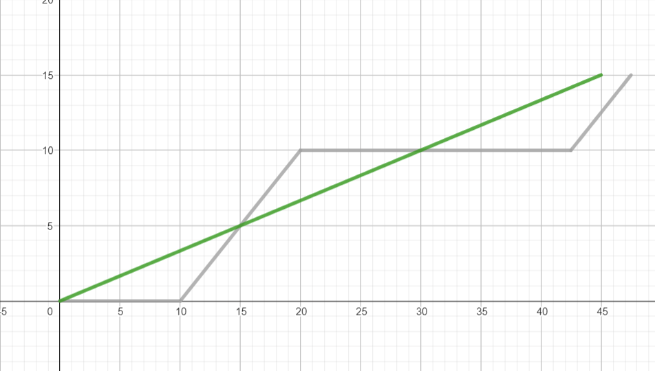
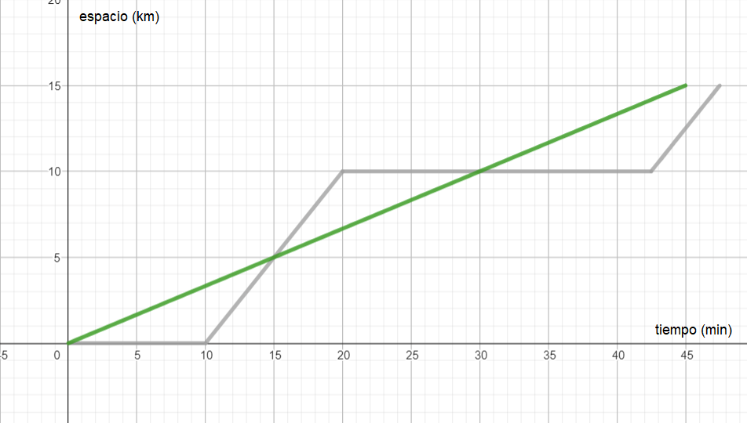
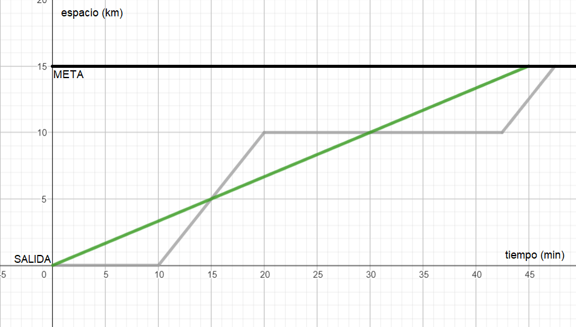
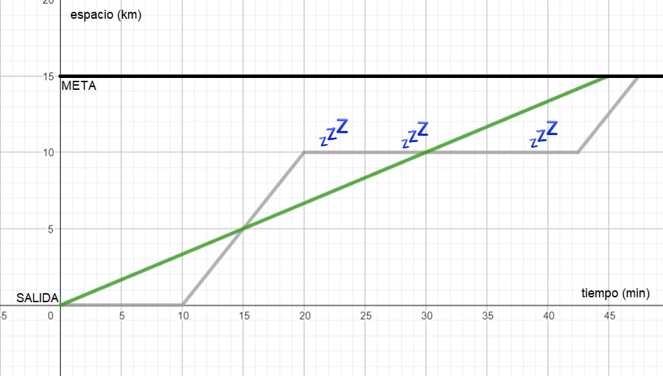
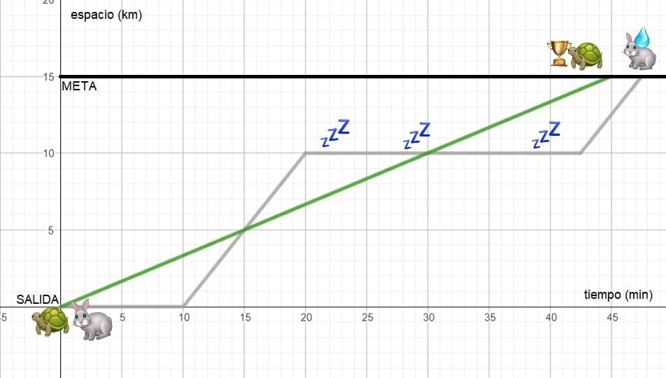
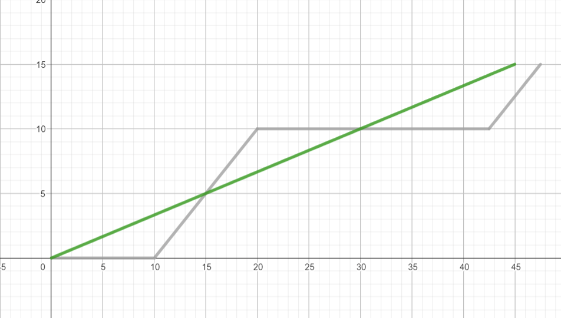
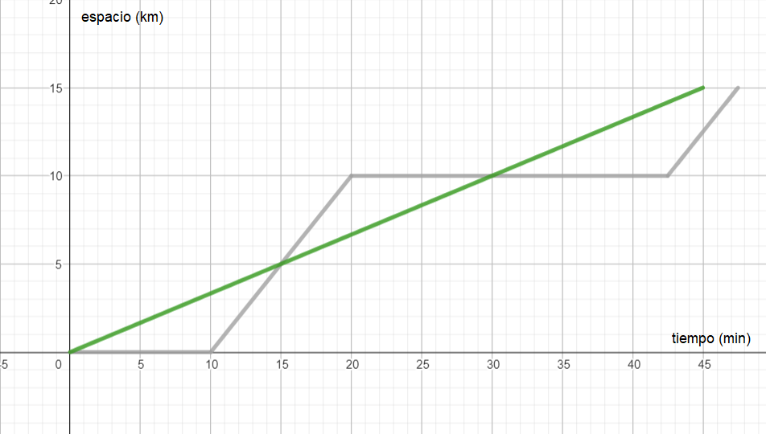
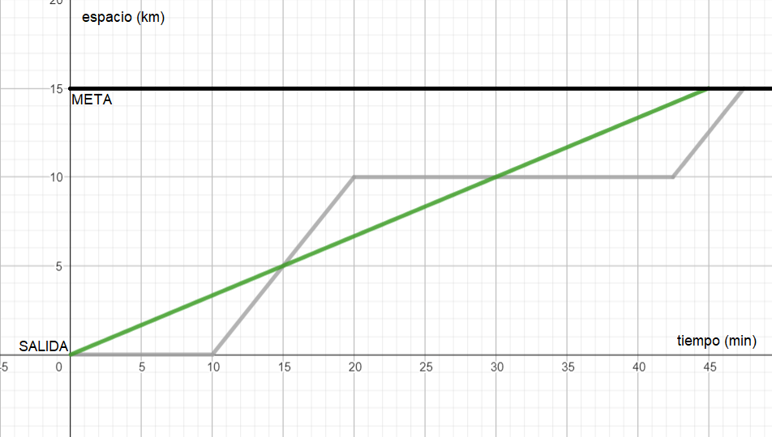
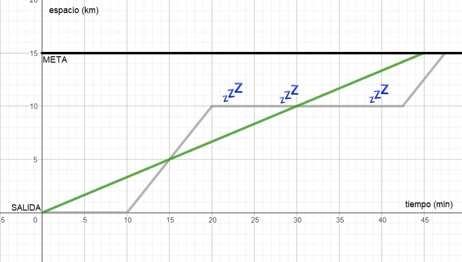
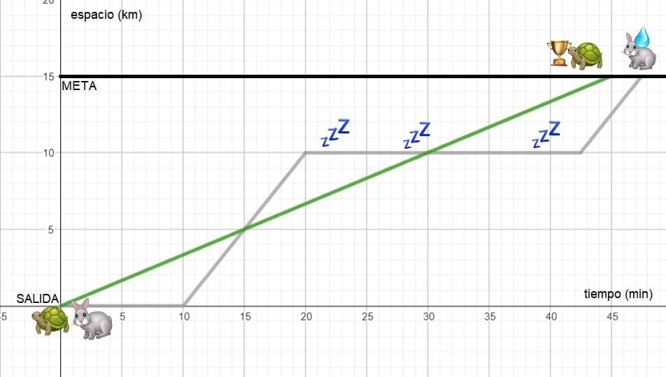

Adivina qué cuento popular se representa en las siguientes gráficas. Cada una de ellas contiene un poco más de información que la anterior.
Imagen 1

Imagen 2

Imagen 3

Imagen 4

Imagen 5

Imagen 6

Adivina qué cuento popular se representa en las siguientes gráficas. Cada una de ellas contiene un poco más de información que la anterior.
Imagen 1
Imagen 2

Imagen 3

Imagen 4

Imagen 5

Imagen 6

Reflexiona sobre las diferencias entre las imágenes 1 y 2. ¿Qué diferencias encuentras entre las imágenes 2 y 3? ¿Ayudan estas diferencias a averiguar el cuento? ¿Por qué?
A continuación, contesta a las siguientes preguntas sobre las gráficas anteriores:
¿Cuánto tiempo ha durado la carrera? ¿Y cuál era su longitud?
¿Cuánto ha tardado la tortuga en completar la carrera?
¿En qué tiempo o tiempos se encontraban la liebre y la tortuga en el mismo lugar? ¿A qué distancia de la salida estaban dichos lugares?
¿Cuánta distancia de ventaja le ha dejado la liebre a la tortuga?
¿Cuánto ha durado la siesta de la liebre?
¿Cuál de los dos participantes ha realizado la carrera de forma más estable? ¿Por qué? Discute con tu compañero qué significa “estable” en esta situación.
¿A qué velocidad ha mantenido la tortuga durante la carrera? Busca información sobre la velocidad de las tortugas y discute con tu compañero si la situación que se muestra en las gráficas es realista o no. Recuerda que
\text{velocidad} = \frac{\text{espacio recorrido}}{\text{tiempo empleado}}
Obra publicada con Licencia Creative Commons Reconocimiento Compartir igual 4.0